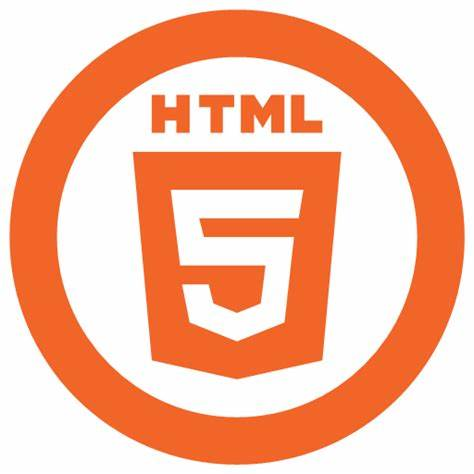

Formations
Voici les technologies et langages que j'utilise dans le développement web :



Développeur Web & Concepteur Réseaux
Je m'appelle Moïse SUMAILI Sumah, développeur web passionné et concepteur de réseaux informatiques. Mon expertise couvre la conception de solutions web, la gestion de projets de réseaux pour les entreprises et collectivités, ainsi que la création d’applications interactives. J'ai travaillé sur plusieurs projets pour améliorer la connectivité et les services numériques dans divers contextes. Mon approche repose sur l'innovation et la simplicité pour offrir des solutions efficaces.
Développement d'une application pour la gestion des rémunérations des employés, incluant la gestion des employés, des départements et des paiements.
Mise en place d'un réseau local pour la gestion des données au sein de la commune, améliorant la connectivité et les échanges de données.
Conception d'une plateforme web pour la publication et la gestion des enregistrements de mariage, facilitant la consultation des informations publiques.
Voici les technologies et langages que j'utilise dans le développement web :